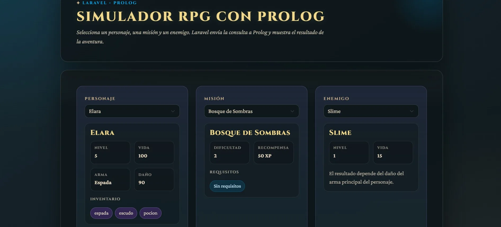

Finalizado
Laravel Prolog RPG
Problema abordado
Validar decisiones de un RPG usando reglas lógicas en lugar de condicionales rígidos dentro del backend web.
Solución desarrollada
Simulador Laravel donde el usuario elige personaje, misión y enemigo; SWI-Prolog evalúa requisitos y resultado de combate.
Mi aporte específico
Integración Laravel + Prolog, flujo de selección de misión y validación de reglas lógicas del simulador.
Resultado obtenido
Aplicación web que demuestra programación lógica aplicada a decisiones interactivas y respuesta dinámica al usuario.